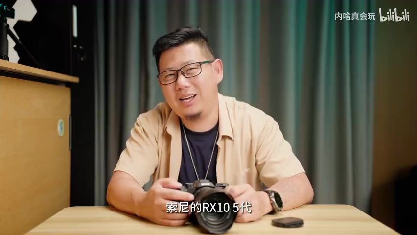
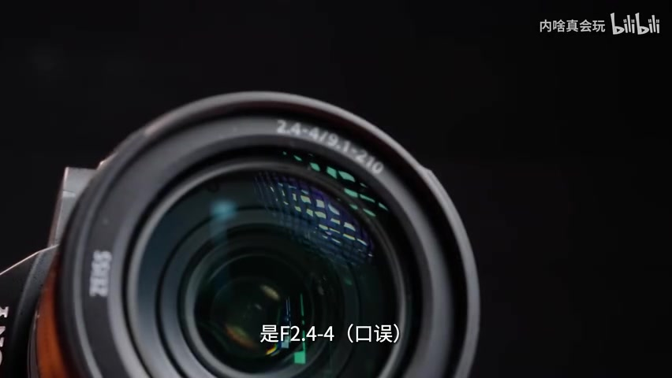
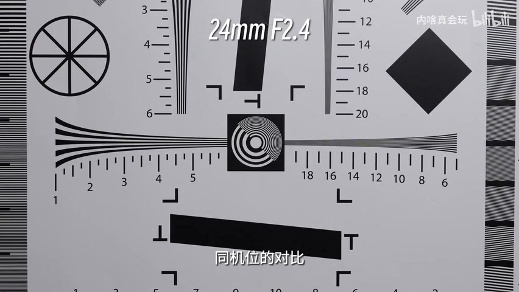
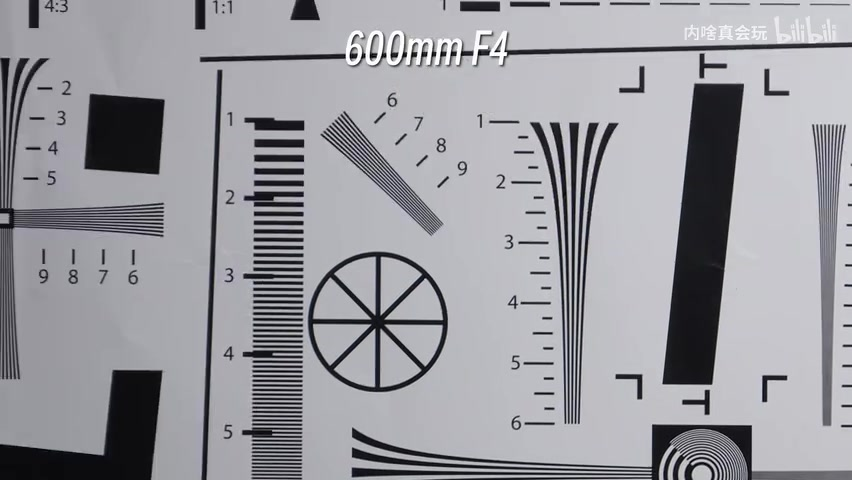
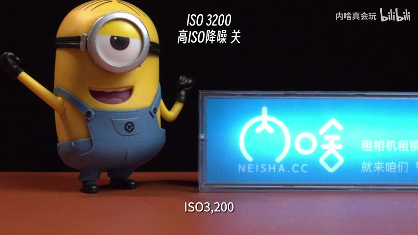
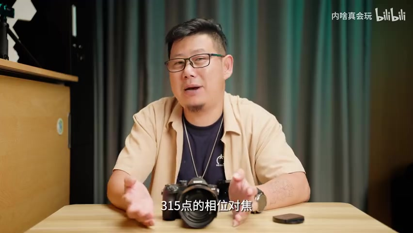
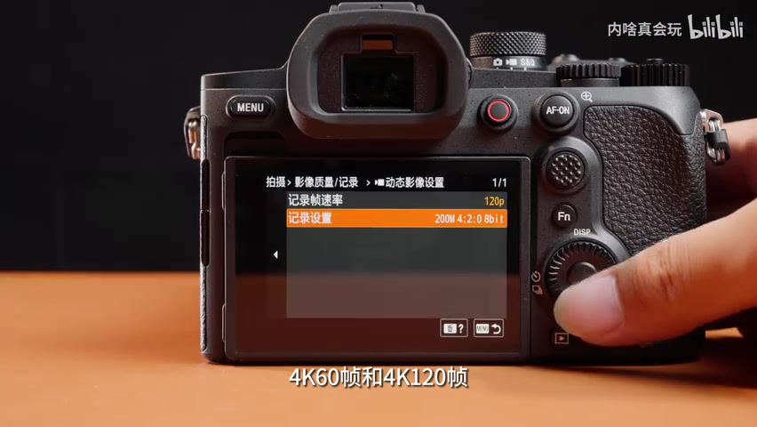
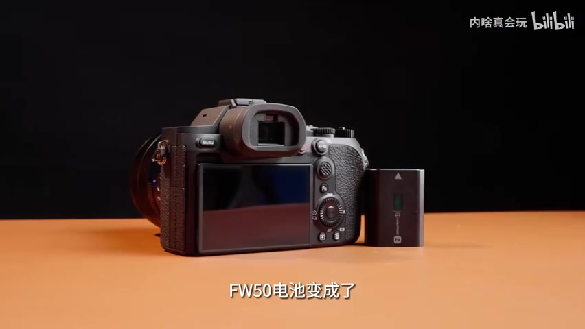

01
中文
听起来是不是很全能？但我今天先把话说在前面。
EN
Sounds pretty all-around, right? But let me lay it on the line first.
表达提示all-around（全能）；lay it on the line（把话说在前面、直说）

Scene English · 相机评测 · 索尼RX10 V
RX10 V Review: Is the Sony RX10 V an Upgrade or a Money Grab? | Jidao #344
🎧 语音讲解
Opening: 24–600mm Isn't the Same as All-Rounder
情境UP主开门见山：RX10 V 焦段覆盖等效全画幅24–600mm，听起来全能，但「先说话在前面」——它不是真正的全能相机，因为代价是极小的1英寸CMOS。语域：评测口播，直给观点。
听起来是不是很全能？但我今天先把话说在前面。
Sounds pretty all-around, right? But let me lay it on the line first.
表达提示all-around（全能）；lay it on the line（把话说在前面、直说）
它并不是一个真正的全能相机，它只是从焦段角度覆盖了24到600毫米。
It's not a truly versatile camera — it just covers 24 to 600 millimeters in terms of focal length.
表达提示versatile（全能的）；focal length（焦段）
这是有代价的，代价就是一个非常小的CMOS。
And that comes at a cost — the cost is a very small CMOS sensor.
表达提示come at a cost（有代价）；CMOS sensor（CMOS传感器）
把话说在前面 → lay it on the line / say it up front / be straight with you
全能相机 → a truly versatile camera / an all-in-one camera

The Flaws First: Small Sensor, Limited Bokeh
情境节目惯例先说缺点：一英寸CMOS导致高感不够好；F2.4–4光圈看参数不错，但背景虚化和画质别抱太高期望。语域：评测口播，吐槽语气。
第一个问题就是CMOS一英寸不够大，导致它的高感不够好。
The first issue is that the one-inch CMOS isn't big enough, which hurts its high-ISO performance.
表达提示high-ISO performance（高感表现）；isn't big enough（不够大）
但是它的背景虚化和它的画质，你也别抱太高期望。
But for background bokeh and image quality, don't set your expectations too high.
表达提示background bokeh（背景虚化）；set your expectations too high（期望过高）
你以为你买的是一个卡片机，其实你拿的是一个随身小钢炮。
You think you're buying a compact camera, but what you're really holding is a pocket bazooka.
表达提示a compact camera（卡片机）；a pocket bazooka（随身小钢炮）
别抱太高期望 → don't set your expectations too high / don't expect too much
随身小钢炮 → a pocket bazooka / a compact powerhouse

Telephoto Test: 600mm Is Convenient, Not Pro
情境实测画质：24mm和300mm表现稳，只有到600mm端锐度明显下降、色散更明显。UP主用马拉松比喻：前10公里轻盈、20公里能聊天，但能跑完全程本身就厉害。语域：评测口播，类比生动。
600毫米的中央画质我觉得我是能接受的，边缘画质我也硬能接受。
I can accept the center sharpness at 600 millimeters, and I can force myself to accept the edges too.
表达提示center sharpness（中央画质）；force myself to accept（硬着头皮接受）
这就像跑马拉松，前10公里步伐轻盈，20公里你还可以跟旁边的妹子聊两句。
It's like running a marathon — light steps for the first ten kilometers, and at twenty you can still chat with the girl beside you.
表达提示light steps（步伐轻盈）；marathon（马拉松）
胖卡5它是方便的600毫米，而不是专业炮筒级的600毫米。
The RX10 V gives you a convenient 600mm, not a professional-grade telephoto cannon.
表达提示a convenient 600mm（方便的600毫米）；telephoto cannon（炮筒级镜头）
硬能接受 → force myself to accept / barely acceptable
专业炮筒级 → professional-grade telephoto / a serious big-glass

High ISO: Respectable by Day, Revealing by Night
情境1英寸传感器高感测试是「灾难的开场」。ISO64到6400的阶梯测试，白天低感没问题，ISO一到1600以上噪点就开始明显。UP主调侃：白天是体面人，晚上就开始露出底色。语域：评测口播，段子式比喻。
一英寸的传感器，对于高感测试来讲，就是一个灾难的开场。
A one-inch sensor is a disastrous start when it comes to high-ISO testing.
表达提示a disastrous start（灾难的开场）；when it comes to（就…而言）
白天、低感、光线充足，画面是没有问题的。
By day, at low ISO, with plenty of light, the image is fine.
表达提示low ISO（低感）；plenty of light（光线充足）
这就叫白天是体面人，晚上就开始露出底色了。
It's what you'd call respectable by day — but at night, its true colors start to show.
表达提示respectable by day（白天体面）；true colors show（露出底色）
露出底色 → show its true colors / reveal its flaws
光线充足 → plenty of light / well-lit

Real Strengths: Dual Processors & Color Science
情境说回优点：两个 BIONZ XR 处理器、八级 DRO 动态范围优化、新的色彩科学和创意外观，对直出非常有利——这台机器很多是女生在用，肤色和绿色观感比上一代更舒服。语域：评测口播，真诚夸赞。
它真正的优点是，有两个BIONZ XR处理器，有八级DRO的动态范围优化。
Its real strengths are two BIONZ XR processors and eight levels of DRO dynamic range optimization.
表达提示dynamic range optimization（动态范围优化）；real strengths（真正的优点）
也有新的色彩科学和新的创意外观，这个对于索尼的直出来讲是非常有帮助。
There's also new color science and new creative looks, which are a huge help for straight-out-of-camera JPEGs.
表达提示color science（色彩科学）；straight out of camera（直出）
肤色和绿色的观感，就是比上一代更舒服。
Skin tones and greens just look more pleasing than the previous generation.
表达提示skin tones（肤色）；more pleasing（更舒服、更讨喜）
动态范围优化 → dynamic range optimization / extended dynamic range
直出 → straight-out-of-camera / JPEGs as-is

AF Upgrade: The Camera Tracks for You
情境相比上代315点相位对焦，RX10 V 升级到575点，还加入独立AI芯片，支持人眼、人脸、鸟、动物、昆虫、汽车、火车、飞机的主体识别。过去是你盯着主体去追，现在是机器帮你盯。语域：评测口播，感叹进步。
胖卡5升级到575点的相位对焦，还加入了独立的AI芯片。
The RX10 V upgrades to 575 phase-detection points and adds a dedicated AI chip.
表达提示phase-detection points（相位对焦点）；a dedicated AI chip（独立AI芯片）
过去是你盯着主体去追，现在是机器帮你盯主体。
Before, you had to track the subject yourself — now the camera tracks it for you.
表达提示track the subject（追踪主体）；the camera does it for you（机器帮你）
我觉得用过对焦好的机器，你是回不去的。
Once you've used a camera with great autofocus, you can't go back.
表达提示you can't go back（回不去）
独立AI芯片 → a dedicated AI chip / an on-board AI processor
回不去了 → you can't go back / there's no turning back

Video Leaps: 4K120p, But Not a Swiss Army Knife
情境静态拍摄是小修小补，但动态画面进步很大：上代只有8bit 4K 30p，这一代直接到4K 60p 和4K 120p、10bit 4:2:2、支持S-Log3和导入用户LUT。缺点也要说：4K120p有裁切、4K下果冻效应明显。语域：评测口播，先扬后抑。
静态的拍摄你可以说它是小修小补，但是它的动态画面进步很大。
For stills, you could call it small tweaks — but for video, the improvement is huge.
表达提示small tweaks（小修小补）；a huge improvement（进步很大）
这一代直接来到了4K60帧和4K120帧，10比特和4:2:2的采样。
This generation jumps straight to 4K60 and 4K120, with 10-bit 4:2:2 sampling.
表达提示10-bit 4:2:2 sampling（10比特4:2:2采样）
但是它的缺点我也要说出来，比如说它的4K120帧有裁切，视角会变窄。
But I also have to mention the downsides — like the crop at 4K120, which narrows the field of view.
表达提示the crop（裁切）；narrow the field of view（视角变窄）
小修小补 → small tweaks / minor refinements
视角变窄 → narrows the field of view / a narrower angle

Verdict: In Five Words — Not Really Worth It
情境最后吐槽重量1.1公斤，省的是换镜头的麻烦但没省重量。结尾给出购买建议：五个字「不太值得买」，15199元的价位在2026年有太多新机和二手可以选择，手持旧款没必要急着升级。语域：评测口播，幽默收尾。
它省的是换镜头的麻烦，并不是帮你省掉了重量。
It saves you the hassle of swapping lenses, but it doesn't save you the weight.
表达提示the hassle of（…的麻烦）；swap lenses（换镜头）
所以最后给大家一个购买建议，五个字：不太值得买。
So here's my final buying advice, in five words: not really worth it.
表达提示buying advice（购买建议）；not really worth it（不太值得买）
假设你自己手里有个RX10四代，你也没必要急着升级。
If you already own an RX10 IV, there's no need to rush into an upgrade.
表达提示rush into an upgrade（急着升级）
省麻烦 → save the hassle / skip the trouble
急着升级 → rush into an upgrade / rush to upgrade
说一台相机不是全能机
形容相机画质白天好晚上差
夸相机对焦好
给朋友购买建议
焦段是 focal length（焦距），不是 focus length；focus 是「对焦」，语义完全不同。
「不轻」用 heavier / not that light；not too big 表达的是体积大小，不是重量。
one inch big 中式直译；直接用 one inch 作表语即可。
对焦性能用 autofocus（自动对焦）；focus 也可用但 autofocus 更贴合相机语境。